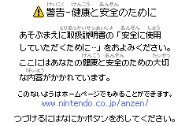

Screw Breaker - Goushin DoriRureRo (Japan)
Stateless / Passcode 📳 Rumble Motor 📺 Joybus 💾 MultiBoot 🎮 4P Link 🔌 Game Boy Player Rumble (libgbp)
Cartridge Identity
- Game Code
V49J(FamilyV49)- Header Title
SCREWBREAKER- Maker / Revision
01/ rev0- ROM Size
- 8.0 MiB (8,388,608 B)
- Save Media
None / Unknown- SHA-256
411cc8ffdacd5698a064ee49cf28a531c34c9a746d341ef9c1cb1cdd5fb7a204
Screenshots

Cartridge Hardware & Physical Peripherals
This cartridge PCB features physical hardware peripherals: 📳 Rumble Motor.
Detailed register specifications, GPIO pinouts, and hardware architecture are available in the Cartridge Hardware Reference.
- Cartridge Rumble Motor
built_in_vibration_motoron0x080000C4,0x080000C6(Actuated by bit_3 (0x08 on GPIO_PORT_DATA))
Niche & Rare Accessories
Detected niche/rare GBA accessory support: 🔌 Game Boy Player Rumble (libgbp).
Full 343-ROM corpus breakdown in the Cartridge Hardware & Niche Accessories Reference · auto-detected from ROM bytes via
gbakit inspect.
- Game Boy Player Rumble (libgbp)
- SIO
0x04000120· ACK0x8002@0x0c3108· official 18 KB GBP logo @0x4470f4
Link Cable & Multiplayer Communications
This title contains detected communication capabilities: 📺 Joybus 💾 MultiBoot 🎮 4P Link.
Detailed protocol specifications, SIO registers, Joybus commands, and MultiBoot sequences are documented in the Link & Multiplayer Reference.
- Multi-Player SIO (4P)
- 16-bit ring network · SIOCNT (
0x04000128) literals:0x0c2fd8,0x0c328c· SIODATA32/SIOMULTI0 (0x04000120) literals:0x0c305c,0x0c30e0,0x0c314c - GameCube Joybus
- RCNT mode literal
0x0000c304(mode0xC000) at offset0x02be00(RCNT literal at0x02bdfc) - Single-Cart MultiBoot
- Single-Cartridge MultiBoot (Download Play) client/server handler · Thumb SWI 0x25 (
0xDF25):0x11036a,0x200316,0x5097b8,0x539766
Cartridge Storage Architecture: Stateless / Passcode
Zero non-volatile battery hardware: This cartridge PCB contains ROM only (no SRAM, Flash, or EEPROM chips). Progression is preserved via on-screen passcodes or session-only gameplay. No
.sav file is generated or required.
Text, Fonts & Scene Data
- Primary Text Encoding
- Game Freak Gen 3 custom 1-byte charmap (base 'A' = 0xBB) (
26ASCII strings ·3Shift-JIS runs ·5LZ77 ASCII blocks) - Font & VWF Indicators
- VWF Width Table 1bpp Font · BIOS SWIs: BitUnPack
0x10:14· LZ770x11/12:20· Huffman0x13:16· RLE0x14/15:10 - Scene & Packaging
52ROM pointer tables (≥32 entries,7≥200) ·0relativeu32TOCs ·275OAM metasprite hits
Regional Variants & Revisions (Family V49)
- Drill Dozer (Europe) (En,Fr,De,Es,It) (Virtual Console) (
V49P, 8 MiB) - Drill Dozer (USA) (
V49E, 8 MiB)